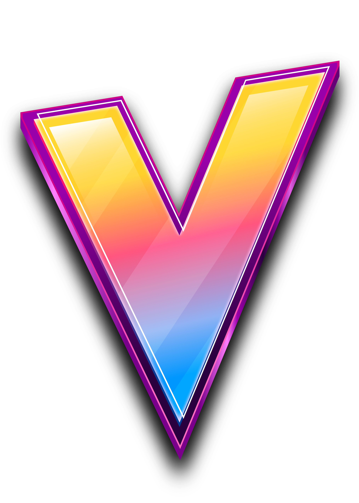

<nav class="tw-flex tw-justify-between tw-mx-auto tw-items-center ">
    <button (click)="toggle()" class="nav_toggle tw-hidden">
      <svg xmlns="http://www.w3.org/2000/svg" class="icon icon-tabler icon-tabler-menu-2" width="52" height="52" viewBox="0 0 24 24" stroke-width="2" stroke="currentColor"  stroke-linecap="round" stroke-linejoin="round">
        <path stroke="none" d="M0 0h24v24H0z" fill="none"></path>
        <path d="M4 6l16 0"></path>
        <path d="M4 12l16 0"></path>
        <path d="M4 18l16 0"></path>
     </svg>
    </button>
    <div class="logo tw-flex tw-items-center movile:tw-grow movile:tw-basis-0">
      
      
        <h1 class="xl:tw-block tw-text-center">VALORANSTUDY</h1>
    </div>
  
    <ul class="lista tw-flex movile:tw-mx-2 movile:tw-justify-center movile:tw-items-center movile:tw-gap-6 2xl:tw-gap-10 ">
      <li class="links">
        <a>AGENTES</a>
      </li>
      <li class="links">
        <a [routerLink]="['/home']" routerLinkActive="activado">HOME</a>
      </li>
      <li class="links">
        <a [routerLink]="['/armas']" routerLinkActive="activado">ARMAS</a>
      </li>
      <li class="links">
        <a href="">MAPAS</a>
      </li>
    </ul>
  
    <div
      class="icons tw-flex tw-items-center tw-gap-4 tw-grow tw-basis-0 tw-justify-end"
    >
      <a href="https://twitter.com/home">
        <svg
        id="twitter"
          xmlns="http://www.w3.org/2000/svg"
          class="icon icon-tabler icon-tabler-brand-twitter-filled"
          width="29"
          height="29"
          viewBox="0 0 24 24"
          stroke-width="2"
          stroke="currentColor"
          stroke-linecap="round"
          stroke-linejoin="round"
        >
          <path stroke="none" d="M0 0h24v24H0z" fill="none"></path>
          <path
            d="M14.058 3.41c-1.807 .767 -2.995 2.453 -3.056 4.38l-.002 .182l-.243 -.023c-2.392 -.269 -4.498 -1.512 -5.944 -3.531a1 1 0 0 0 -1.685 .092l-.097 .186l-.049 .099c-.719 1.485 -1.19 3.29 -1.017 5.203l.03 .273c.283 2.263 1.5 4.215 3.779 5.679l.173 .107l-.081 .043c-1.315 .663 -2.518 .952 -3.827 .9c-1.056 -.04 -1.446 1.372 -.518 1.878c3.598 1.961 7.461 2.566 10.792 1.6c4.06 -1.18 7.152 -4.223 8.335 -8.433l.127 -.495c.238 -.993 .372 -2.006 .401 -3.024l.003 -.332l.393 -.779l.44 -.862l.214 -.434l.118 -.247c.265 -.565 .456 -1.033 .574 -1.43l.014 -.056l.008 -.018c.22 -.593 -.166 -1.358 -.941 -1.358l-.122 .007a.997 .997 0 0 0 -.231 .057l-.086 .038a7.46 7.46 0 0 1 -.88 .36l-.356 .115l-.271 .08l-.772 .214c-1.336 -1.118 -3.144 -1.254 -5.012 -.554l-.211 .084z"
            stroke-width="0"
            fill="currentColor"
          ></path>
        </svg>
      </a>
  
      <a href="https://www.instagram.com/">
        <svg
          xmlns="http://www.w3.org/2000/svg"
          id="instagram"
          class="icon icon-tabler icon-tabler-brand-instagram"
          width="29"
          height="29"
          viewBox="0 0 24 24"
          stroke-width="2"
          stroke="currentColor"
          fill="none"
          stroke-linecap="round"
          stroke-linejoin="round"
        >
          <path stroke="none" d="M0 0h24v24H0z" fill="none"></path>
          <path
            d="M4 4m0 4a4 4 0 0 1 4 -4h8a4 4 0 0 1 4 4v8a4 4 0 0 1 -4 4h-8a4 4 0 0 1 -4 -4z"
          ></path>
          <path d="M12 12m-3 0a3 3 0 1 0 6 0a3 3 0 1 0 -6 0"></path>
          <path d="M16.5 7.5l0 .01"></path>
        </svg>
      </a>
      <a href="https://www.facebook.com/">
        <svg
        id="facebook"
          xmlns="http://www.w3.org/2000/svg"
          class="icon icon-tabler icon-tabler-brand-facebook-filled"
          width="29"
          height="29"
          viewBox="0 0 24 24"
          stroke-width="2"
          stroke="currentColor"
          fill="none"
          stroke-linecap="round"
          stroke-linejoin="round"
        >
          <path stroke="none" d="M0 0h24v24H0z" fill="none"></path>
          <path
            d="M18 2a1 1 0 0 1 .993 .883l.007 .117v4a1 1 0 0 1 -.883 .993l-.117 .007h-3v1h3a1 1 0 0 1 .991 1.131l-.02 .112l-1 4a1 1 0 0 1 -.858 .75l-.113 .007h-2v6a1 1 0 0 1 -.883 .993l-.117 .007h-4a1 1 0 0 1 -.993 -.883l-.007 -.117v-6h-2a1 1 0 0 1 -.993 -.883l-.007 -.117v-4a1 1 0 0 1 .883 -.993l.117 -.007h2v-1a6 6 0 0 1 5.775 -5.996l.225 -.004h3z"
            stroke-width="0"
            fill="currentColor"
          ></path>
        </svg>
      </a>
    </div>
  </nav>


